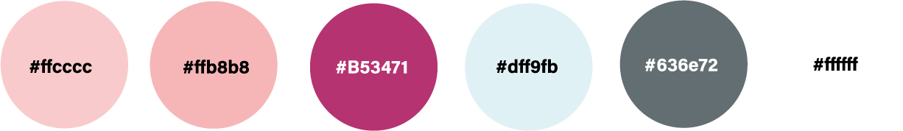

Desiciones Gráficas
Tipografía
Se utilizaron 3 tipografías a lo largo del sitio web:
1. Lobster: abc | ABC | 123
2. Montserrat: abc | ABC | 123
3. Montserrat Alternates: abc | ABC | 123
Paleta de Colores
Para la paleta de colores del sitio web me inspiré en los colores de Ashley Too, la muñeca del capítulo elegido y en el personaje de Ashley O, que es la estrella de pop. Quise que el sitio represente de alguna forma a ambos personajes y a su historia.

Morfología
Como se puede observar en cada uno de los wireframes y en como se maquetó el sitio, quise crear un sistema que equilibre el sitio tanto en las cajas de texto como en los colores y las imagenes. En cada página del sitio se crea un juego que se repite de alguna forma en todas las demás páginas.En cuanto a la imagen principal del index, fue creada por mi a partir de imagenes vectoriales.